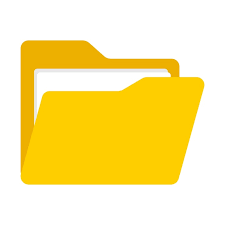
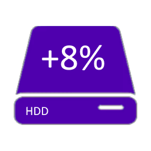
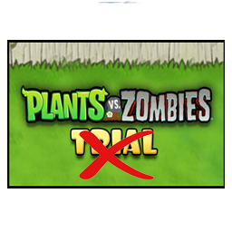
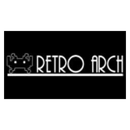
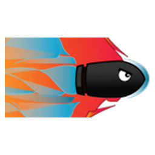

webMAN MOD
DESCARGAR
webMAN MOD
DESCARGAR
 multiMAN
DESCARGAR
multiMAN
DESCARGAR
 IRISMAN
DESCARGAR
IRISMAN
DESCARGAR
 PKGi
DESCARGAR
PKGi
DESCARGAR

INSTRUCCIONES:
Una vez instalado, abre el juego que desees. Dentro del juego, presiona el botón PS para ir al menú XMB. Luego presiona R2 + O, vuelve a presionar PS y finalmente presiona SELECT para desbloquear todos los trofeos
ADVERTENCIA: No se ha comprobado si existe riesgo de baneo
Utiliza esta opción si deseas desinstalar el programa
DEBUG BROWSER (FIX INTERNET) DESCARGARUtiliza esta herramienta para solucionar errores comunes con el navegador de internet de la PS3
APOLLO SAVE TOOL DESCARGAR
FileManager v1 DESCARGAR
HDD DESCARGAR
desbloquear completos los juegos demo DESCARGAR
RetroArch DESCARGAR
ManaGunZ DESCARGAR